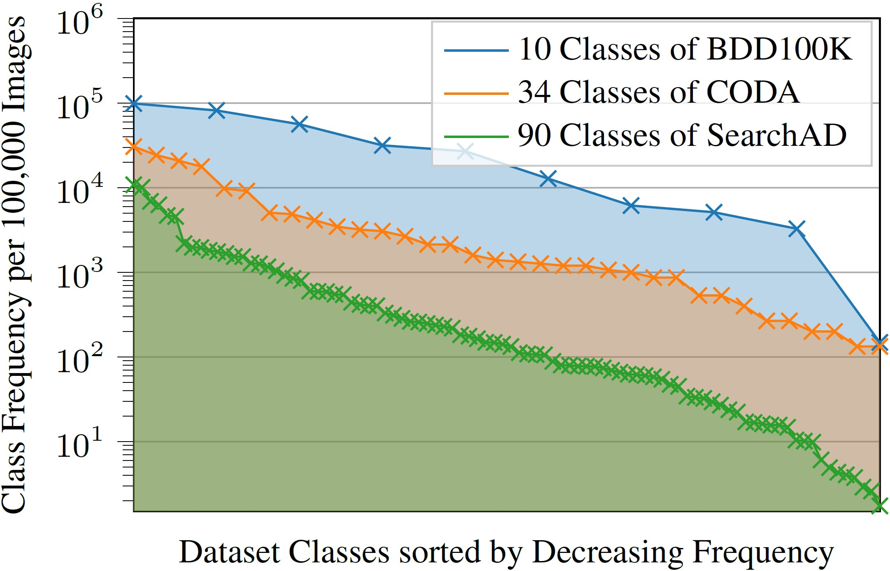
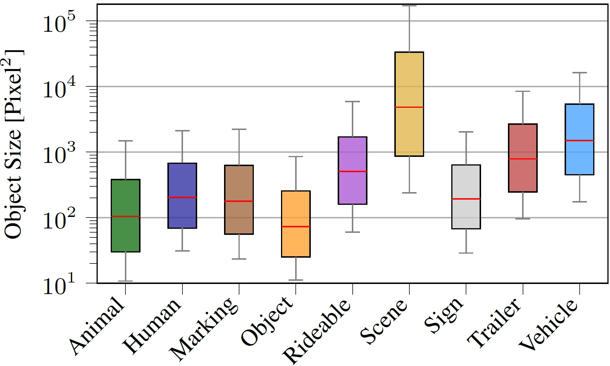
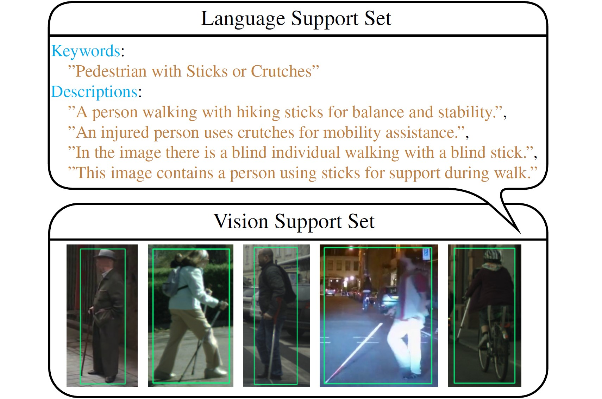

SearchAD: Large-Scale Rare Image Retrieval Dataset for Autonomous Driving

Abstract
Retrieving rare and safety-critical driving scenarios from large-scale datasets is essential for building robust autonomous driving (AD) systems. As dataset sizes continue to grow, the key challenge shifts from collecting more data to efficiently identifying the most relevant samples.
We introduce SearchAD, a large-scale rare image retrieval dataset for AD containing over 423k frames drawn from 11 established datasets. SearchAD provides high-quality manual annotations of more than 513k bounding boxes covering 90 rare categories. It specifically targets the “needle-in-a-haystack” problem of locating extremely rare classes, with some appearing fewer than 50 times across the entire dataset. Unlike existing benchmarks, which focused on instance-level retrieval, SearchAD emphasizes semantic image retrieval with a well-defined data split, enabling text-to-image and image-to-image retrieval, few-shot learning, and fine-tuning of multi-modal retrieval models.
Comprehensive evaluations show that text-based methods outperform image-based ones due to stronger inherent semantic grounding. While models directly aligning spatial visual features with language achieve the best zero-shot results, and our fine-tuning baseline significantly improves performance, absolute retrieval capabilities remain unsatisfactory. With a held-out test set on a public benchmark server, SearchAD establishes the first large-scale dataset for retrieval-driven data curation and long-tail perception research in AD.

Overview of SearchAD classes grouped by category.

Distribution comparison showing the extreme rarity of SearchAD classes.

Object size distribution for each SearchAD category.

Language and vision support set for the search query "Human - With Sticks or Crutches".
SearchAD Dataset: The Foundation for Rare Image Retrieval
The SearchAD dataset is a large-scale autonomous driving dataset, specifically targeting rare and safety-critical objects and scenes. It's designed to provide a comprehensive and challenging environment for semantic image retrieval research. The dataset is available at https://huggingface.co/datasets/iis-esslingen/SearchAD.
Dataset Overview
-
Name: SearchAD
-
Origin: Uniquely compiled by integrating data from 11 established AD datasets, ensuring diversity and real-world variability.
Dataset Size: 423,798 frames (images).
| Dataset [Download Link] | #Frames | #Rare Classes | #Objects |
|---|---|---|---|
| Lost and Found [1] | 2,239 | 18 | 2,098 |
| WildDash2 [2] | 5,068 | 80 | 5,032 |
| ACDC [3] | 8,012 | 60 | 7,471 |
| IDD Segmentation [4] | 10,003 | 52 | 12,192 |
| KITTI [5] | 14,999 | 47 | 9,840 |
| Cityscapes [6] | 24,998 | 75 | 31,037 |
| Mapillary Vistas [7] | 25,000 | 86 | 35,093 |
| ECP [8] | 47,335 | 76 | 33,081 |
| nuScenes [9] | 80,314 | 56 | 166,152 |
| BDD100K [10] | 100,000 | 80 | 83,102 |
| Mapillary Sign [11] | 105,830 | 90 | 128,167 |
| SearchAD [12] | 423,798 | 90 | 513,265 |
-
Annotations: Features more than 513,265 high-quality manual bounding box annotations.
-
Categories: The 90 rare classes are grouped into 9 broader categories:
Animal Human Marking Object Rideable Scene Sign Trailer Vehicle
BibTeX
@article{embacher2026searchadlargescalerareimage,
title={SearchAD: Large-Scale Rare Image Retrieval Dataset for Autonomous Driving},
author={Felix Embacher and Jonas Uhrig and Marius Cordts and Markus Enzweiler},
year={2026},
eprint={2604.08008},
archivePrefix={arXiv},
primaryClass={cs.CV},
url={https://arxiv.org/abs/2604.08008},
}